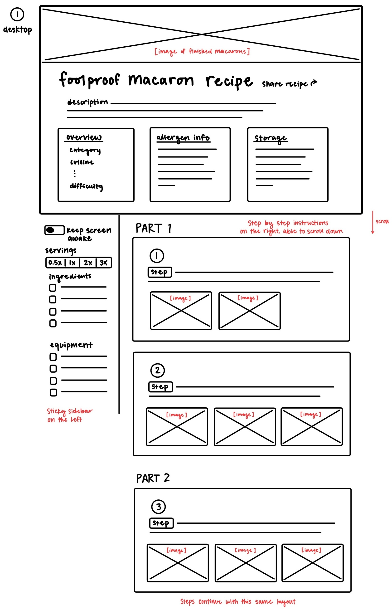
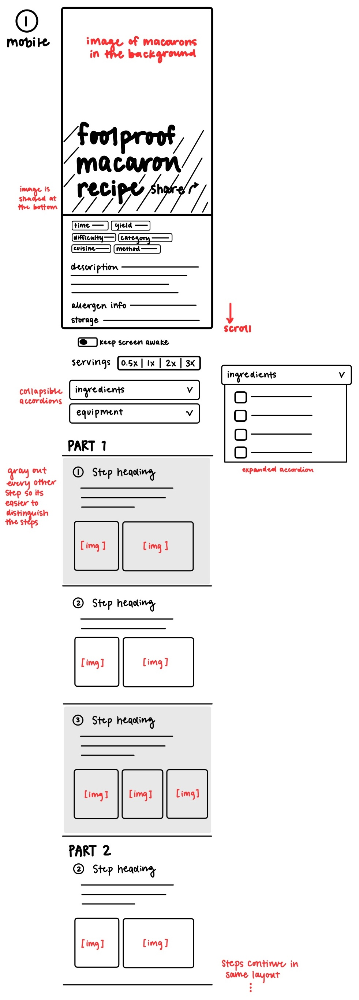
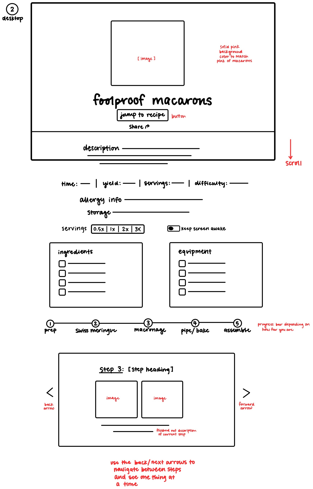
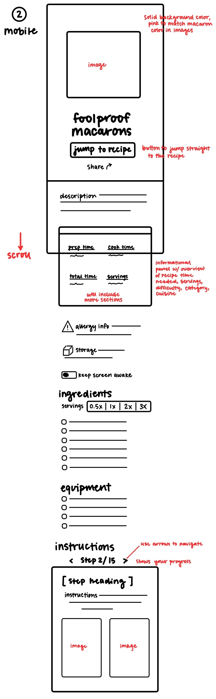

This desktop layout begins with a prominent image of the finished macarons spanning the width of the
screen, followed by the title "foolproof macaron recipe" and a brief description. Below this, three
distinct boxes provide a recipe overview, allergen information, and storage instructions. The main
body of the page is split into two columns. The left column is a sticky sidebar that remains visible
as the user scrolls, containing a "keep screen awake" toggle, a serving size adjuster, and
checklist-style sections for both ingredients and equipment. The right column is a scrollable list
of numbered, step-by-step instructions. Each step includes a heading, detailed descriptive text, and
one or more associated images, all contained within a rectangular panel.

The mobile layout starts with a large, full-width background image of macarons with the title
overlaid. Below this, compact informational boxes display recipe details like time, yield, and
difficulty, followed by a overall description of the recipe, allergen info, and storage info. Just
below the "keep screen awake" toggle and serving size adjuster, the page has two collapsible
accordion sections for ingredients and equipment, which saves vertical space. When either of these
accordion sections is expanded, a checklist will appear. The cooking instructions are presented as a
scrolling list of numbered steps. To improve readability on a smaller screen, every other step's
section is shaded gray, helping to visually distinguish them. Each step includes a heading,
instructions, and relevant images.

This desktop design features a central image at the top, followed by the recipe title and a "jump to
recipe" button. Below the description of the overall recipe, there is a horizontal bar detailing
recipe times, yield, and difficulty. This is followed by allergen and storage information, a serving
size adjuster, and a "keep screen awake" toggle. Ingredients and equipment are listed in two
side-by-side checklist boxes. A progress bar indicates the five stages of the recipe: prep, Swiss
meringue, macaronage, pipe/bake, and assemble. The main instructions are presented in a carousel
format. Users can navigate through numbered steps using back and forward arrows, with each step
displaying its heading, images, and detailed description on a single screen.

This mobile layout mirrors its desktop counterpart with a top-centered image, title, and "jump to
recipe" button. Following a description of the recipe, there is a grid panel with recipe time,
yield, and other details. Below this are sections for allergy info, storage, a "keep screen awake"
toggle, and a serving size adjuster. Ingredients and equipment are listed sequentially in a checkbox
list. The instructions are presented in a card-like carousel with navigation arrows and a progress
indicator that tells you what step you're on, such as "Step 2/15". Each step is shown individually,
including its heading, detailed instructions, and associated images, allowing the user to focus on
one task at a time. The user will also be able to swipe through each step to get to the next one.
